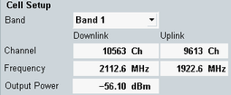
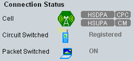
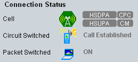

An established connection to the UE is a prerequisite for all signaling tests, including the combined signal path measurement described in this application sheet.
To set up a connection for the CS domain:
Preset your R&S CMW to ensure a definite instrument state.
Open the "WCDMA Signaling" application, e.g. from the task bar (press "TASKS" to open the task bar).
If the application is not present in the task bar, enable it in the "Generator/Signaling Controller" dialog (press "SIGNAL GEN" to open the dialog).
In the main view of the signaling application, adjust the "Cell Setup" settings to the capabilities of your UE.
The "Frequency" must be supported by the UE and the "Output Power" must be sufficient.

Press the "Config" hotkey to open the configuration dialog.
In section "RF Settings", select a bidirectional RF connector for input and output. This example uses RF 1 COM.
If necessary, also adjust the "External Attenuation" settings.
Close the configuration dialog.
Connect your UE to the RF 1 COM connector.
To turn on the DL signal, press "ON | OFF". Wait until the "WCDMA-UE Signaling" softkey indicates the "ON" state and the hour glass symbol has disappeared.
Switch on the UE.
The UE synchronizes to the DL signal and registers. Note the connection states displayed in the main view and wait until registration is complete.

After the UE has registered, the main view provides UE information, UE capability information and the UE measurement report.
Press the "Connect Test Mode" hotkey to set up a connection.
Note the connection states displayed in the main view and wait until the connection (the call) has been established.

With enabled measurement reporting, the properties of the uplink signal change upon a received report, resulting, for example, in power steps. So if you want to perform TX measurements, especially power measurements or tests expecting a continuous RMC signal, disable measurement reporting:
Press the "Config" hotkey to open the configuration dialog.
In section "UE Measurement Report" disable "Report".
Close the configuration dialog.
Failed registration Registration can fail if authentication or security is disabled but the UE expects/requires an authentication or security procedure. It can also fail if authentication or security is enabled but not supported by the UE or the SIM card type or secret key do not match. Related settings can be accessed via the configuration dialog, section "Network > Security Settings". |